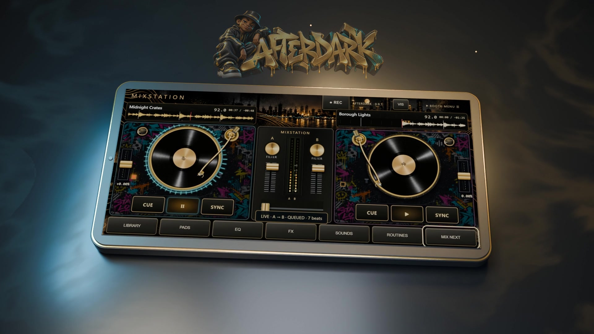

A little vinyl attitude.
A lot of room to play.
Drag the record to scratch. Ride the crossfader. Use cues and EQ to give a transition your own signature.

YOUR ANDROID. YOUR BOOTH.
Two decks. Your own music. Scratch over the beat, shape your transitions and record a set worth playing back.
Android 9+ · Landscape controls · Local music files
Available now · One-time purchase · Plus applicable tax

SEE THE HANDOFF
Watch the decks hand over in this short app preview, set to Shaolin Switchblade. Explore the full tour for scratching, effects and recording.
Explore the 60-second app tour ↓01 / GET YOUR HANDS ON IT
Keep your collection close and your controls closer. The decks stay at the heart of the experience.
Drag the record to scratch. Ride the crossfader. Use cues and EQ to give a transition your own signature.
Add beat-timed echo, reverb, flanger and phaser. Switch effects in and out while the music plays.
Record your mix as audio or a portrait clip with reactive visuals. Save it, listen back and build on your next session.
02 / FIND YOUR NEXT MOVE
Not sure what goes together? Mix Next compares estimated tempo and energy, explains the pairing and lets you audition a transition.
Listen first. Adjust. Then make it yours. Suggestions guide your choices; they don’t replace your ears.

03 / NO GUESSING. WATCH IT WORK.
A one-minute Full HD tour, set to Shaolin Switchblade. Explore the decks, effects and recording tools.
Actual app interface captured in a desktop browser at a mobile landscape size, condensed to one minute. Promotional soundtrack: Shaolin Switchblade; the music is an edited soundtrack, not the live output of the controls shown. Android system folder and save dialogs are not shown.
04 / MAKE IT YOUR SESSION
Select a local music folder and its subfolders, then load a track on each deck.
Find a pairing, rehearse a blend, throw in a scratch and shape it with effects.
Record the session and save through Android’s file picker. Come back with fresh ears.
BEFORE YOU STEP IN
The current build requires Android 9 or later and is designed for landscape use. This is an early release. Performance varies by device; an exhaustive supported-device list is not available. Keep the app in the foreground while mixing. Video recording requires more processing power.
Afterdark works with local audio files you supply. Commercial music is not included. Spotify and YouTube streaming, stem separation and key lock are not included in this edition. Only share recordings you have permission to distribute.
Your APK download and license key are supplied through your Payhip purchase receipt. Download it on your phone, open it and allow installation from your browser or file manager if Android asks. It is not currently a Google Play release.
The decks play local files on your device. Internet is required for activation and license refresh. Your purchase allows two devices and up to 30 days of offline use after successful validation.
Dual decks, touch scratching, crossfader, EQ, effects, folder import, Mix Next suggestions, and session recording. You supply the music. This page covers Android; it does not advertise an iPhone app or include a Windows license.
If a save dialog is cancelled, use Recover last recording in Library. Export recordings before uninstalling or changing devices. Private app data, cues and folder permissions do not automatically transfer.
THE ANDROID EDITION
A hands-on booth for experimenting with the music you already own. Bring a folder, find a pairing and make the transition yours.
Android APK · Local music · Dual-deck performance
Secure checkout and delivery through Payhip. Applicable tax shown at checkout. Android 9+ only; bring your own music. Questions? Contact support.